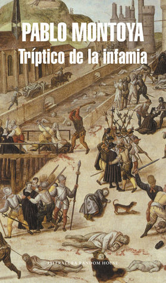

Tríptico de la infamia
Reseña por Jorge I. Zuluaga

Ver reseña en GoodReads (necesita cuenta)
No había leído nada de Pablo Montoya hasta ahora. Ahora quiero leer mucho más.
Tríptico de la infamia narra historias sobre tres artistas del Renacimiento francés. Pero no se trata de ninguno de los grandes pintores de la época, o no por lo menos aquellos que todos recordamos (aunque los nombres de Leonardo, Miguel Ángel, Albrecht, entre otros, no dejan de aparecer aquí y allá). La novela se enfoca en tres grabadores, acuarelistas y editores que retrataron, entre otras cosas, algunos de los eventos más infames de su época, en particular escenas de la "conquista" de América y de la matanza de San Bartolomé, cuando decenas de miles de protestantes fueron masacrados en París por una turba de cristianos católicos con la anuencia de los gobernantes de turno.
El resultado no puede ser más bonito y conmovedor. En el libro somos transportados por Pablo Montoya, autor colombiano contemporáneo, al interior de la cabeza de personas que vivieron y sufrieron en los años 1500. La mayoría de las historias del libro se cuentan en primera persona, lo que te permite situarte con gran realismo frente a las situaciones cotidianas de los protagonistas. Asimismo, la acción se desarrolla en más de seis lugares diferentes del planeta: las ciudades de París, Dieppe, Lieja y Ginebra en Europa, pero también colonias en la Florida y en el Amazonas. Todas estas cosas hacen aún más impresionante la "hazaña" de Pablo de retratar lugares y tiempos muy ajenos a los nuestros.
Creo que no dejaré de admirar nunca a los autores y las autoras de novela histórica que son capaces de darnos un "vistazo" realista a otros tiempos.
Tríptico de la infamia no es solo una colección de historias infames sobre una época convulsa de la historia. Abunda también en reflexiones profundas, presentadas con la voz interior de los protagonistas, Jacques Le Moyne, François Dubois y Theodor de Bry (a quienes terminarás amando al final), reflexiones que versan sobre la vida, la política, la justicia, la crueldad, la religión y, por supuesto, el arte.
De todas las historias, la más íntima y la que más me conmovió fue la del pintor François Dubois, quien fue testigo directo y víctima de la ignominiosa noche de Bartolomé. Su relato es vívido y conmovedor hasta los tuétanos. El drama de su vida es un reflejo impresionante de lo que debieron vivir muchos durante aquel tiempo de guerras civiles religiosas.
A pesar de ser relatos independientes, las historias de los tres artistas se entrecruzan aquí y allá; los artistas comparten naturalmente un interés por el mismo tema: retratar las infamias de su tiempo.
Pero hay otras cosas que los unen, algunas sutiles y otras mucho más profundas. El efecto narrativo es genial: te emocionas cuando, en medio de la lectura, descubres esos hilos sutiles que unen el tejido de las tres historias.
Es una buena idea leer el libro teniendo a la mano las obras que se describen con precisión, pero también con maestría literaria en algunos apartes. En los siguientes enlaces encontrarán al menos las pinturas, retablos y grabados más importantes: La masacre de San Bartolomé de François Dubois (la imagen más perturbadora de cuantas se describen en la obra), San Jerónimo en su estudio de Albrecht Dürer, los perturbadores grabados con escenas de la conquista de América compilados por Theodor de Bry, en particular la escena de canibalismo que dice haber presenciado Hans Staden, un militar y misionero alemán que sobrevivió a la captura por una comunidad de las selvas brasileras: los tupinambá.
{kind=link}
{kind=link}
{kind=link}
Esta última historia es también de un realismo singular. Naturalmente, está basada en hechos reales y en el libro que escribió el mismo Staden, pero la forma en la que Pablo Montoya la reconstruye, poniéndola en primera persona y en medio de las correrías de De Bry para conseguir los grabados de una obra compilatoria sobre la conquista de América, la hace simplemente magistral. Por momentos, me sentí leyendo un cuento de Borges, no solo porque los hechos parecen sacados de un relato fantástico, sino también por la calidad de la prosa de Pablo.
Al principio me parecieron un poco extrañas las historias que ocurren en el presente y que narran las aventuras que el mismo Pablo Montoya tuvo que vivir para conseguir información sobre los pintores de los que trata el libro. Estas historias son intercaladas por el autor en los últimos apartes del libro con las historias del periplo por Europa de De Bry. Aparecen de improviso y nos obligan a saltar, de una página a otra, más de cuatro siglos, entre los años 1500 y 2000. Los lugares, sin embargo, son los mismos en los que se desarrolla la novela: Dieppe, Lieja, París, lo que crea una interesante sensación de estar viajando en el tiempo; sensación que el mismo Pablo explota literariamente en la narración. Al final, esas experiencias intercaladas convierten al mismo Pablo en un personaje más de la novela, pero un escritor, no un pintor, que es protagonista también de este tríptico de horror.
Con mi pobre criterio literario, creo yo que estamos ante una novela que se convertirá a la larga en un verdadero clásico de la literatura (el libro ha ganado varios premios, entre ellos el prestigioso Premio Rómulo Gallegos). Cuando escribo esta reseña han pasado solo unos años desde que se publicó y su autor es todavía un prolífico escritor colombiano. No son, pues, muchas las ocasiones en las que reconoces vivir un momento importante de la historia de la literatura; así que no dejen pasar más tiempo sin disfrutar de Tríptico de la infamia y de la obra de Pablo Montoya.